In order to derive various conditions for power in both alternators and synchronous motors, let us consider the general problem of power flow through inductive impedance. The circuit diagram shown below consists of voltage source E1, voltage source E1 and load which consists of one resistor in series with an inductor. Now if we assume that the voltage source E1 is greater than the voltage source E2 then the voltage equation for this circuit is given by the equation,
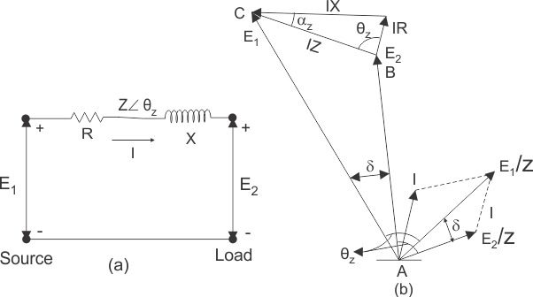
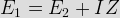
Where Z is R+jX as shown in the above circuit diagram.
From the above expression we write the expression of current as
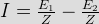
PHASOR DIAGRAM FOR ABOVE CIRCUIT
We will discuss here the simplest way of drawing the phasor diagram for the above circuit. Before we draw phasor diagram, let us write the various notations for each quantity at one place. Here we will use:
θz to represent angle between the voltage E1 and current E1/Z or voltage E2 and current E2/Z
I to represent current in the above circuit and δ to represent angle between E1 and E2.
Given below is the phasor diagram for the above circuit: In order to draw the phasor diagram first draw the E1 voltage and the current E1/Z, mark angle E1 and E1/Z as θz. Similarly draw phasor E2 and E2/Z, such that the angle between E1 and E2 should be δ. Complete the phasor diagram by drawing the voltage drops IX and IR as shown above. Now Let us derive the expression for power supplied by the source E1.
Let the power supplied by the source E1 be P1. We define power as the product of the voltage and current, using this we can write from the phasor diagram as P1=E1*(component of current I in phase with the voltage source E1). Component of current in phase with the voltage source E1 is
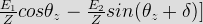
On substituting this expression in the above equation we have
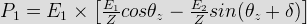
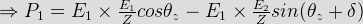
From the phasor diagram, we have θz=90° - αz. On substituting the value of the angle θz in the above expression we have
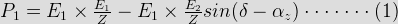
This is the required expression for the power supplied by the source E1.
Let the power supplied by the source E2 be P2. We define power as the product of the voltage and current, using this we can write from the phasor diagram as
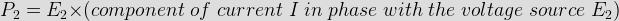
Component of current in phase with the voltage source E2 is
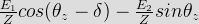
On substituting this expression in the above equation we have
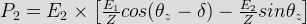
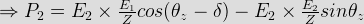
From the phasor diagram, we have θz=90° - αz. On substituting the value of the angle θz in the above expression we have
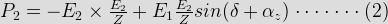
This is the required expression for the power supplied by the source E2.
Now let us derive various equations for the power flow the cylindrical rotor alternator. In order to derive various power equation for an alternator let us substitute voltage source E1 equal to the excitation voltage (Ef), voltage source E2 equals to the terminal voltage (Vt), inductive impedance of the above circuit equals to synchronous impedance (Zs) and Zs=ra+jXs. After replacing all these, we will have power input by the source E1 is equal to power input to the generator (Pig). So,
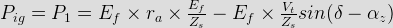
Similarly we have output of the generator
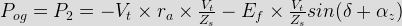
One important result can be derived from these equations. The difference of the power input to the generator and the power output to the generator gives ohmic losses in the generator. So in order to prove above statement let us subtract output power from the input power to the generator:
![P_{ig}-P_{og}= \left[E_f\times r_a\times\frac{E_f}{Z_s}-E_f\times\frac{V_t}{Z_s}sin(\delta-\alpha_z)\right]-\left[-V_t\times r_a\times\frac{V_t}{Z_s}-E_f\times\frac{V_t}{Z_s}sin(\delta+\alpha_z)\right]](14.png "P_{ig}-P_{og}= \left[E_f\times r_a\times\frac{E_f}{Z_s}-E_f\times\frac{V_t}{Z_s}sin(\delta-\alpha_z)\right]-\left[-V_t\times r_a\times\frac{V_t}{Z_s}-E_f\times\frac{V_t}{Z_s}sin(\delta+\alpha_z)\right]")
On expanding the expression, we have
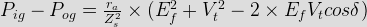
From the phasor diagram we have
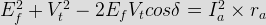
So substituting the value, from this equation we have
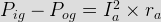
Usually we neglect the value of armature resistance, due to this αz becomes zero and Zs becomes equal to Xs. Hence we have,
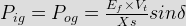
Now we are in state to derive the expression for maximum power output conditions for the generator. In order to derive the maximum power output conditions we will first differentiate the expression of the power output equation of the generator that we have already derived above, after this we equate the equation with zero. On equating with zero we will get the angle relationship between alpha and delta at maximum power out conditions. Mathematically we have L
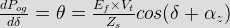
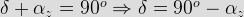
This is the required condition for the maximum power output, at maximum power output we have load angle is equal to the impedance angle.
On substituting the above relation in output power relation we have maximum power output equals to
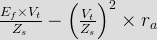
Which is the required expression for the maximum power output for the generator.
Here we are interested in drawing the phasor diagrams for the maximum power output in case of generator. Given below is the phasor diagram for the generator in case of maximum power output. All the symbols have their usual meanings in the phasor diagram.
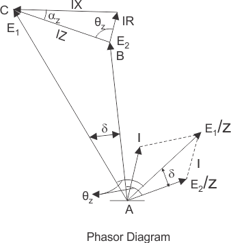
Similarly, we can derive the expression for maximum input to the generator. In order to derive the maximum power input conditions we will first differentiate the expression of the power input equation of the generator that we have already derived above, after this we equate the equation with zero. On equating with zero we will get the angle relationship between alpha and delta at maximum power out conditions. Mathematically, we have
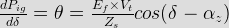
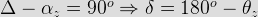
This is the required condition for the maximum power input, at maximum power input we have load angle is equal to the 180 degree minus impedance angle. On substituting the above relation in input power relation we have maximum power input equals to
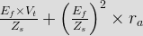
which is the required expression for the maximum power input for the generator.
Here, we are interested in drawing the phasor diagrams for the maximum power input in case of generator. Given below is the phasor diagram for the generator in case of maximum power input. All the symbols have their usual meanings in the phasor diagram. From the phasor diagram of maximum power input we can derive various conditions for the power factor and these conditions are written below:
(a) When (Efcosδ-Iaracosθ) is less than terminal voltage then the power factor will be leading.
(b) When (Efcosδ-Iaracosθ) is equal to terminal voltage then the power factor will be unity.
(c) When (Efcosδ-Iaracosθ) is greater than terminal voltage then the power factor will be lagging.
Let us now derive the expression for Reactive power flow in case of synchronous generator. We can derive expression for the reactive power at the output terminal of the generator as
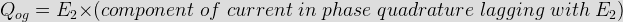
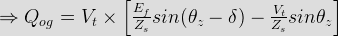
Further we can write this equation as
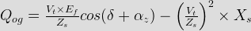
From the above equation in generating mode if we have armature resistance equals to zero then the above equation will reduce to
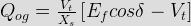
From the above equation we can derive various conditions for the power factor and reactive power, these conditions are written below:
(a) When Efcosδ is less than terminal voltage then the power factor will be leading and reactive power is negative at the output terminal.
(b) When Efcosδis equal to terminal voltage then the power factor will be unity and the reactive power is zero at the output terminal of the generator.
(c) When Efcosδ is greater than terminal voltage then the power factor will be lagging and reactive power is positive.
Now let us derive various equations for the power flow the cylindrical rotor synchronous motor. In order to derive various power equation for a synchronous motor let us substitute voltage source E1 equal to the excitation voltage (Vt), voltage source E2 equals to the terminal voltage (Ef), inductive impedance of the above circuit equals to synchronous impedance (Zs) and Zs=ra+jXs. After replacing all these, we will have power input by the source E1 is equal to power input to the generator (Pig). So,
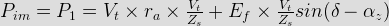
Similarly we have output of the synchronous motor
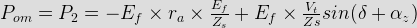
One important result can be derived from these equations. The difference of the power input to the synchronous motor and the power output to the synchronous motor gives ohmic losses in the generator. So in order to prove above statement let us subtract output power from the input power to the synchronous motor:
![P_{im} - P_{om} =\left[E_f\times r_a\frac{E_f}{Z_s}-E_f\times\frac{V_t}{Z_s}sin(\delta-\alpha_z)\right]-\left[-V_t\times r_a\frac{V_t}{Z_s}+E_f\times\frac{V_t}{Z_s}sin(\delta+\alpha_z)\right]](31.png "P_{im} - P_{om} =\left[E_f\times r_a\frac{E_f}{Z_s}-E_f\times\frac{V_t}{Z_s}sin(\delta-\alpha_z)\right]-\left[-V_t\times r_a\frac{V_t}{Z_s}+E_f\times\frac{V_t}{Z_s}sin(\delta+\alpha_z)\right]")
On expanding the expression, we have
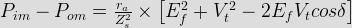
From the phasor diagram we have
So substituting the value, from this equation we have,
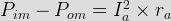
Usually we neglect the value of armature resistance, due to this αz becomes zero and Zs becomes equal to Xs. Hence we have,
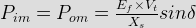
Now we are in state to derive the expression for maximum power output conditions for the synchronous motor. In order to derive the maximum power output conditions we will first differentiate the expression of the power output equation of the synchronous motor that we have already derived above, after this we equate the equation with zero. On equating with zero we will get the angle relationship between alpha and delta at maximum power out conditions. Mathematically we have L
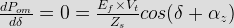
This is the required condition for the maximum power output, at maximum power output we have load angle is equal to the impedance angle. On substituting the above relation in output power relation we have maximum power output equals to
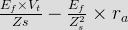
which is the required expression for the maximum power output for the synchronous motor.
Here we are interested in drawing the phasor diagrams for the maximum power output in case of synchronous motor. Given below is the phasor diagram for the synchronous motor in case of maximum power output. All the symbols have their usual meanings in the phasor diagram.
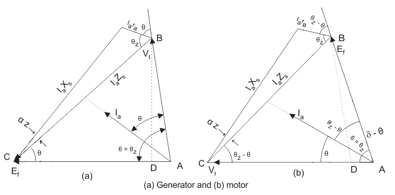
Similarly, we can derive the expression for maximum input to the motor. In order to derive the maximum power input conditions we will first differentiate the expression of the power input equation of the generator that we have already derived above, after this we equate the equation with zero. On equating with zero we will get the angle relationship between alpha and delta at maximum power out conditions. Mathematically, we have
This is the required condition for the maximum power input, at maximum power input we have load angle is equal to the 180 degree minus impedance angle.
On substituting the above relation in input power relation we have maximum power input equals to
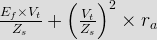
which is the required expression for the maximum power input for the synchronous motor.
Here we are interested in drawing the phasor diagrams for the maximum power input in case of synchronous motor. Given below is the phasor diagram for the synchronous motor in case of maximum power input. All the symbols have their usual meanings in the phasor diagram.
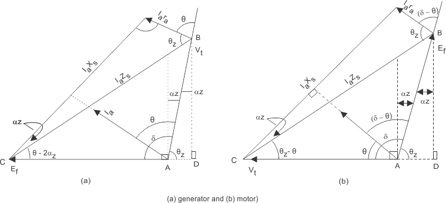
From the phasor diagram of maximum power input we can derive various conditions for the power factor and these conditions are written below:
(a) When (Efcosδ+Iaracosθ) is less than terminal voltage then the power factor will belagging.
(b) When (Efcosδ+Iaracosθ) is equal to terminal voltage then the power factor will be unity.
(c) When (Efcosδ+Iaracosθ) is greater than terminal voltage then the power factor will be leading.
Let us now derive the expression for Reactive power flow in case of synchronous motor. We can derive expression for the reactive power at the input terminal of the synchronous motor
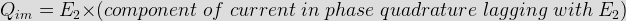
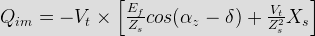
Further we can write this equation as
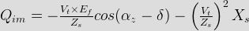
From the above equation in motoring mode if we have armature resistance equals to zero then the above equation will reduce to
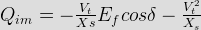
From the above equation we can derive various conditions for the power factor and reactive power, these conditions are written below:
(a) When Efcosδ is less than terminal voltage then the power factor will be lagging and reactive power is positive at the input terminal.
(b) When Efcosδ is equal to terminal voltage then the power factor will be unity and the reactive power is zero at the input terminal of the synchronous motor.
(c) When Efcosδ is greater than terminal voltage then the power factor will be leading and reactive power is negative.
 by
by